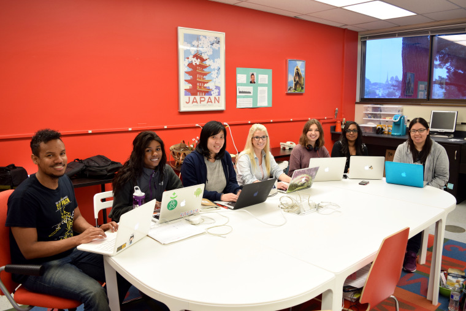

- Home
- PINC Minor
- Data Science
- GEN—PINC Scholarship
- PINC Summer Program
- PINC News
- Meet the Team!
- Contact Us
What's special about PINC?

Benefits
- Earn a minor in Computing Applications.
- No prior computer science background needed.
- You will learn computer science skills together with other biology / chemistry/ biochemistry majors.
- You will learn computer science from computer science professors who are excited to teach non-CS majors.
- You will receive mentoring from motivated computer science graduate students.
- Receive opportunities to network with professionals working at the intersection of Biology/Chemistry and Computer Science.
- Increase your chances on the job market or to get into graduate school.
- You will receive a laptop (as a loan) for the four semesters you will be in the program.